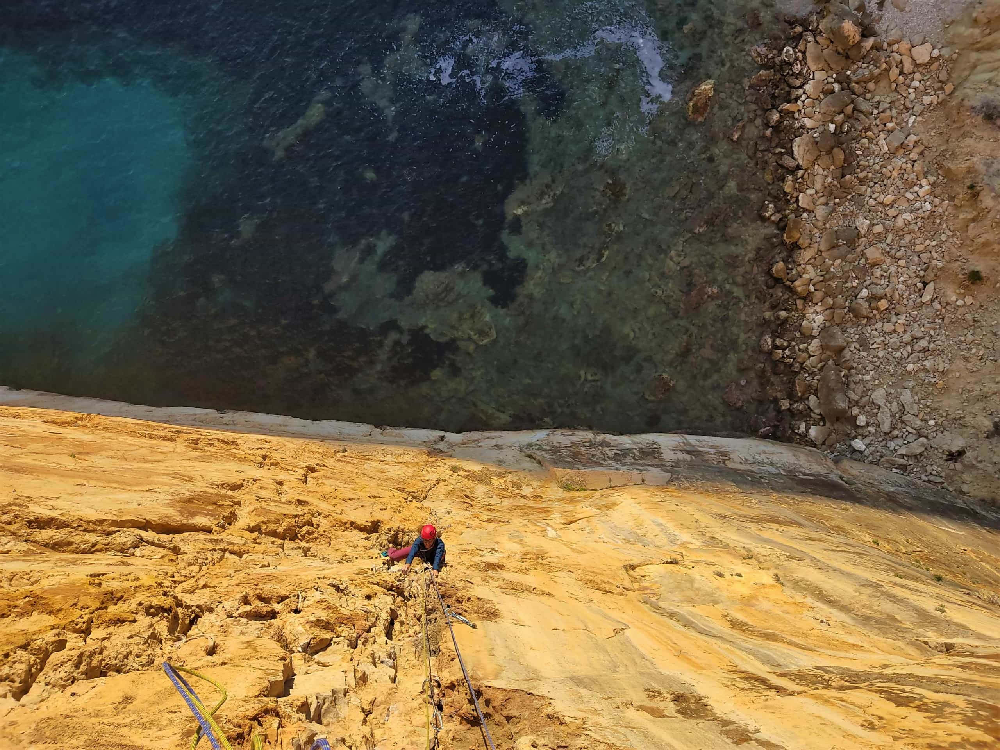
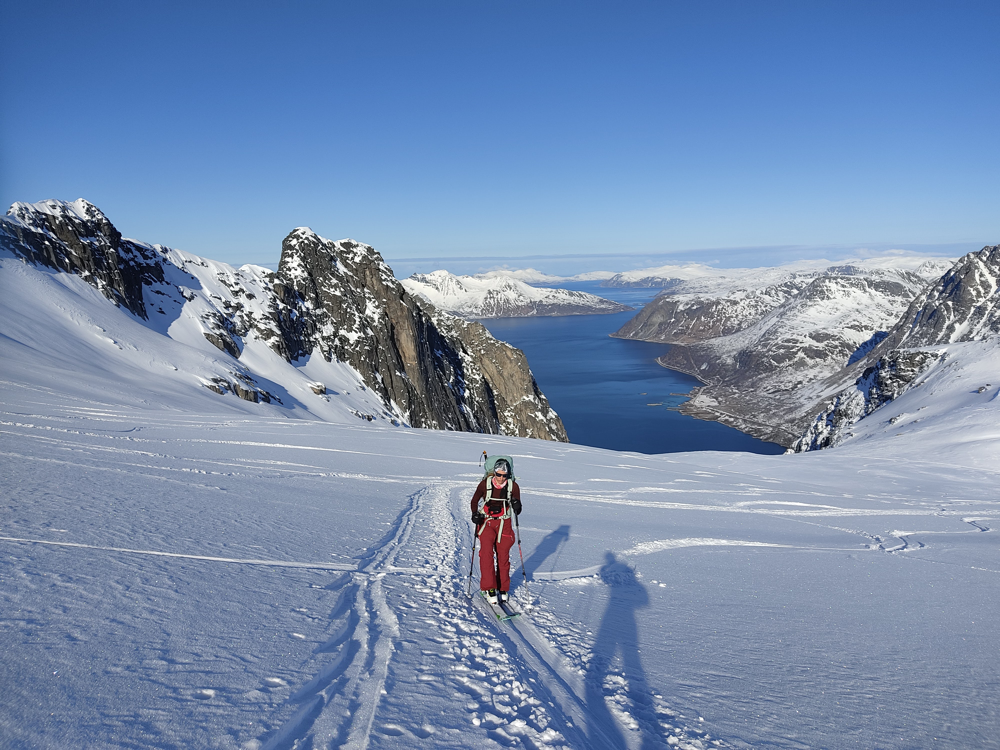
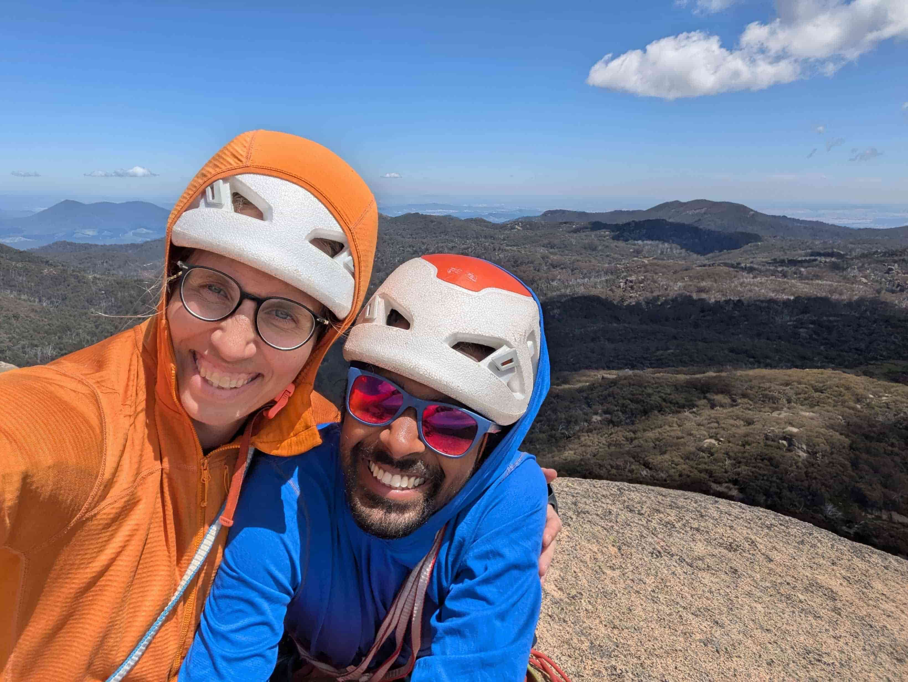
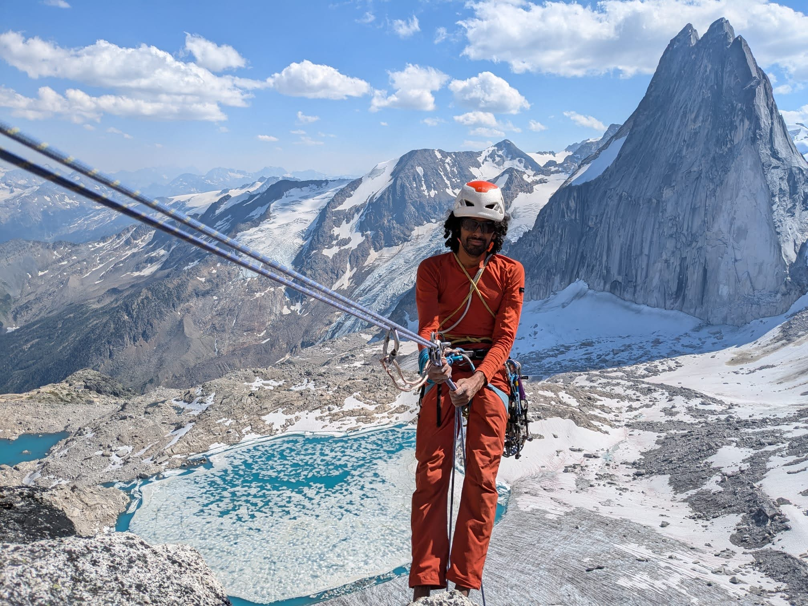
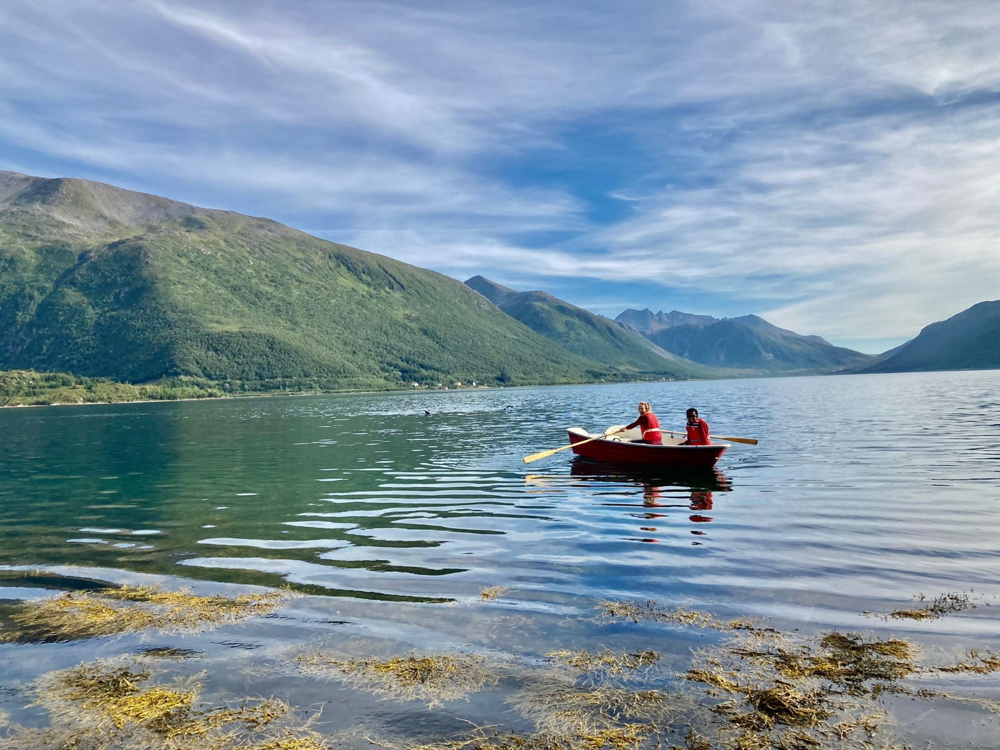
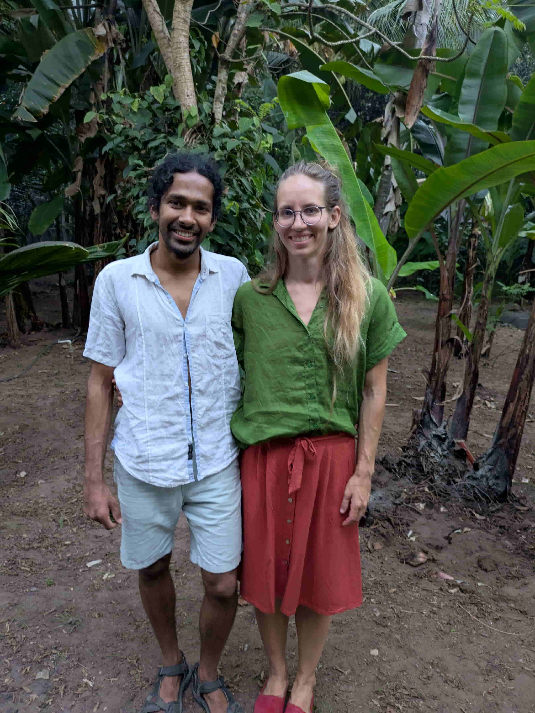

Please enter the password to view details.
Wrong password.
Saturday, June 6, 2026
Krčkovice · Czech Republic
Date: Saturday, June 6, 2026
Location: Táborová základna Krčkovice - U Vosáků, Krčkovice, Czech Republic
Getting there: Krčkovice is located in the Czech countryside about an hour and a half from Prague, close to some sandstone towers of course :) The venue is a lovely campsite in a forest, close to a lake and nearby climbing.
If you're flying/taking a train from outside the Czech Republic, it's probably best to get to Prague first. Krčkovice is roughly 1.5 hours driving from Prague (alternatively 4.5 hours from Berlin). If you won't have a car, let us know and we'll put you in touch with some of our friends who can give you a ride (in exchange for a beer or two ;)).
Important note: The road from Hrubá Skála to Krčkovice is closed for construction this year. If you're coming from Prague, make sure to turn off at Turnov and come to Krčkovice through Kacanovy. Google Maps knows about the closure, so if you use Google Maps for navigation, you should be good.
We'll have the venue from Thursday evening (June 4) until Monday morning (June 8) and you're very welcome to join us for as long as you like. Small heads up: we won't have food/drinks catered except on Saturday, so outside of that we'll be operating somewhere between "casual gathering" and "mildly organized chaos".
The main ceremony and celebration will be on Saturday (June 6). Besides that, on Friday, we'll have the legal ceremony (with people from the town hall, translators etc.) by the nearby lake and anyone curious about bureaucratic romance is welcome to come witness it. On Sunday, the plan is to go climbing somewhere nearby if the weather is good and spirits are high :)
On Monday, we plan to drive to Adršpach and spend a few days there climbing. You're more than welcome to join us for some climbing. The sandstone towers there are huge and the climbing is pretty adventurous (see Spradventure and Lords of Trad for a taste)! Absolutely worth going there as a climber if you've never been.
Krčkovice is a charming little village, which unfortunately means that there aren't a ton of options for sleeping. The campsite has tents which you can sleep in (bring a sleeping bag and sleeping mat if you plan to do that). Alternatively, there's room at the venue to put up your own tent or sleep in your car. If you'd rather not camp, there is a B&B nearby and three cottages as part of a nearby campsite. Please let us know in the RSVP form if you'd like us to reserve one of those options for you.
The weather should be pleasant during the day in June, but the evenings might get chilly. Bring some warm clothes for the evening/night. A rain jacket may come in handy as well (although we certainly hope not!)






Dinner and drinks
Breakfast at the venue
Leave the venue and walk or drive to Hastrman tower
Ceremony at Hastrman — with a bit of climbing involved
Lunch
Cake
Live band and dancing
Dinner
Breakfast and goodbyes
If you need logistical help during the wedding, please reach out to Pavla: +420 608 626 213 in the first instance. Pavla only speaks basic English, so if that doesn't work (or if you cannot reach Pavla), please contact Eva: +420 736 411 535 instead. If you can't reach either of them, please contact Sowmya: +43 688 64284460. They are all on WhatsApp.
Joining us on our wedding day is the best gift we could ask for. If you would still like to give us a gift, we'll have a piggy bank at the venue for our honeymoon.